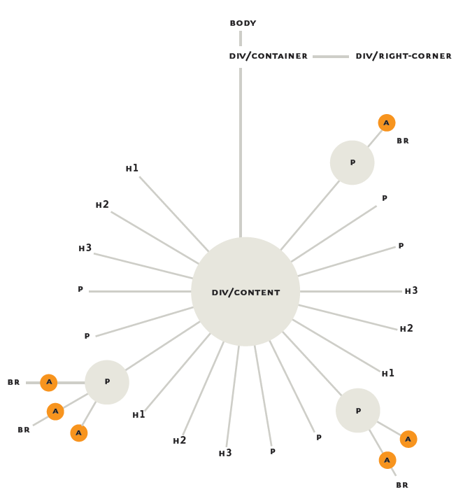
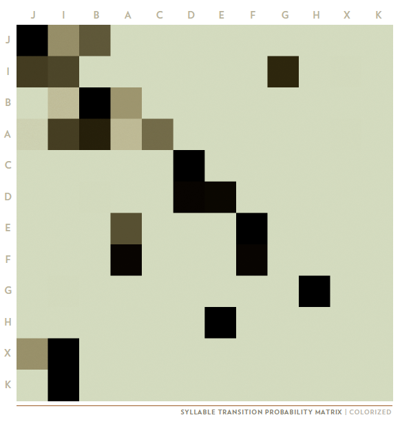
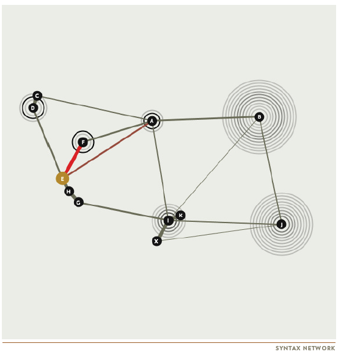
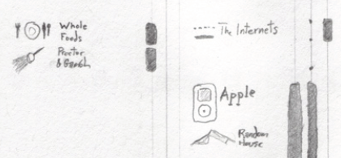
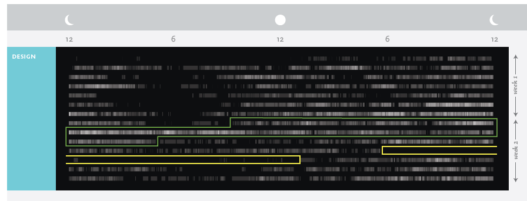
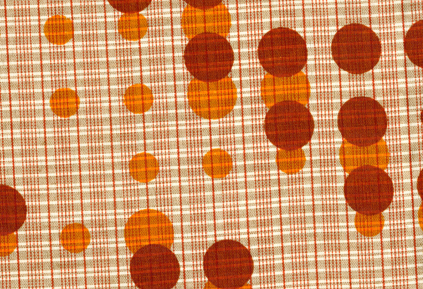

Thus the work that follows is split
between two goals. The first is to represent
data in such a way that its internal
structure reveals itself visually,
providing insights that could not be
gleaned through textual analysis. The
other is to investigate the formal qualities
of these computationally generated,
‘found’ patterns.Pattern Recognition – Introduction
Christian Swinehart, who created the choose-your-own-adventure visualization I wrote about earlier, also wrote a book on visual theory titled Pattern Recognition (available as paperback on Lulu or as a free PDF). Swinehart first picked up a PhD in neuroscience before going to the Rhode Island School of Design to get his MFA in graphic design (the thesis for which served as the basis for Pattern Recognition). Throughout the book, but especially in the beginning, the message conveyed is that the human eye and brain, together as a single system, are massively parallel in the way they process data and that visualization works not because of some soft “aesthetic” mechanism but because of that parallel capacity. We can see the patterns in data arranged visually more effectively than we can when arranged in narrative or tabular form. From this perspective, data visualization is not supplemental, but primary.

Though my principal
concern is communicating the information
within a dataset to the viewer, it
is impossible to divorce this aim from
formal concerns. After all, in a diagram
the form is the information.
More clearly than static imagery, animated and dynamic visualizations are formal representations of the code used to produce the visualization, and not just the data itself. Visualization of algorithm affords the possibility of engagement with algorithm. Visualization of data is only half the story, a situation highlighted at DH11 by Nick Montfort, who suggested a Digging Into Code challenge to complement CLIR’s Digging Into Data.


The likelihood that a particular note from a Zebra Finch will be followed by another note, with darker indicating more likely.
Swinehart turns from HMTL to music, first exploring a variety of methods to represent the works of Bach, and then to examine the repertoire of Zebra Finches in collaboration with a researcher at UCSF. In both cases, dealing with the data requires dealing with the structures in place to denote the data, be they the wide variety of formalized structures in place to write musical notes or a handcrafted system used by researchers to record birdsong in a notebook.


Based on the probabilities shown above, the path through a Zebra Finch song and the variety of permutations within that path, including likely values for repetition of notes.
A critical distinction between the birdsong and the Bach is the parametric nature of birdsong and how it can vary within set rules so that each song is not exactly the same in its instantiation but each song is still the same in its parameters. Visual representation of uncertainty is important enough here at Stanford that we’re devoting an entire workshop series to it next year, and Swinehart’s method of visualization, where note is node, has wide applicability well beyond birdsong.

There is an aspect to information and data visualization that is increasingly connected to a core package of “hip” goods and practices and as part of this movement it’s growing more common to visualize the activities of everyday life. Swinehart spends the second part of Pattern Recognition doing just such biographical visualization. He categorizes his life (technology, consumption, media, humanity) and sketches out his “Divided Attention” to these core parts. Though the visualizations in this section are as beautiful as in the earlier and later section, this really is the weakest as far as data theory goes. Spending habits; charts of “Early”, “Mid” and “Lately” life; theory of romantic attraction–all are represented beautifully but the underlying data, often collected from Swinehart’s own life, are in my mind reduced in efficacy based on lack humanistic sophistication. With a background in cog-sci, neuroscience and graphic design, Swinehart typifies the scientistic perspective that inflects modern data visualization. Whether it’s InMaps of LinkedIn (created by Gephi developer Mathieu Bastian), the ever-present visualization of Les Miserables as a social network or Silicon Valley start-ups like Visual.ly that offer info visualization to “find and experience stories and interact with brands”–the visual representation of the human experience is hardly informed by the aesthetic, artistic, narrative and philosophical tradition that we broadly define as the “humanities”.Uncertainty and complexity, so obvious in birdsong, is suddenly missing in the recounting of one’s life as activity. Dynamic systems, so necessary for the illustration of web page lifecycles, disappear when the subject matter is romantic engagement. A deep, sophisticated, nuanced and problematic understanding of socio-cultural and political systems–one that mirrors the complex understanding of physical and logical systems possessed by computer and information scientists–is necessary for the advancement of the visual display of qualitative information.


Aggregate computer use of design students with the green pox indicating the 48-hour period before a final project deadline.
To be clear, Swinehart’s visual aesthetic is top-rate. Once back to the world of less problematic datasets (in the case of his biographical exploration, he moves on to visualizing computer usage based on surveillance software) his product is informative and focused. Using this technique, he shows slides of procrastination among design students in a visual manner reminiscent of tests for genetic markers.


He turns from binary to raster manipulation by using the Game of Life to deform text from Annie Dillard’s The Force That Drives the Flower. As a study of visualization of emergent behavior it recapitulates earlier lessons about uncertainty and animation. Swinehart identifies artifacts of the transformation, such as a self-sustaining pattern that he refers to as a “glider” based on its movement across the simulation region. He calls them “magical configurations”. The output, like the binary-to-textile, is transported to the physical realm as a flipbook. The theme continues with a hand-drawn version of the Lorenz Attractor painstakingly animated in stop motion.
After this, Swinehart explores the visual representation of a physical system based off of relational databases. Instead of logical containers and values, he has cords and boxes and cubes. Queries pull strings and where statements cover or open square holes in boxes and necessitate a shift to colored flashlights and punchcards to ask more complicated queries–but not much more complicated. The lesson throughout is that the physical representation of the immaterial, whether that physical representation is actual and consists of printing out a card catalog for Wikipedia or whether that representation is virtual as with the aforementioned blocks and lights, it is useful and perhaps even necessary to give fullness to the visual representation of a phenomenon but incompletely and quickly overhwelmed.
Near the end, Swinehart takes great pains to point out that Pattern Recognition was created with a focus on methods and that his datasets and their implicit claims to knowledge were more representative of his own tastes,
to me they are
among the most interesting subject
matter in the world. But I also accept
that designing to please myself guarantees
a satisfied audience of one, but
no more.
I can say quite comfortably that the theoretical considerations in Pattern Recognition would satisfy any audience, and that the methods and results would prove useful to anyone visually representing information or data or even knowledge.